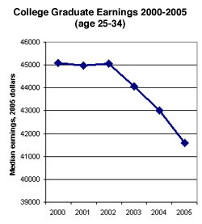
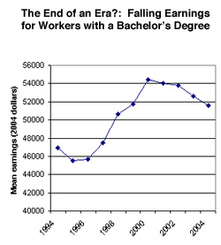

Education
Dykman also felt the subject of education deserved scrutiny in a feature about America. Several topics appealed to him:
1. Earnings . Few Americans realized, he suspected, that the real income (adjusted for inflation) of college graduates had declined steadily in the first four years of the 21st century. Though it had begun to climb again in 2005, it had not regained its pre-2000 level. [27]
The last time college graduates’ real income had declined over several consecutive years was in the 1970s. [28] At the time, Harvard economist Richard Freeman had suggested that this decline was due to the expanding supply of college-educated workers. [29] But the real income of college graduates had begun growing steadily again in the 1980s and had continued its upward trend until the end of the 20th century. Dykman wondered how to quantify the “lifetime earnings reward of education,” which he knew was still substantial, but was nevertheless decreasing. He suspected that notwithstanding politicians’ advocacy of education as a panacea for the nation’s ills, its value was diminishing in relation to its costs.
Wage decline
|

Source: United States Census, via Michael Mandel, “The Continuing Decline in College Wages,” Economics Unbound, BusinessWeek Weblog, September 1, 2005. |

Source: United States Census, via Michael Mandel, “Young College Grads in Free Fall,” Economics Unbound, BusinessWeek Weblog, August 29, 2006. |
2. Funding . Another feature of education he could explore was public school funding. Elementary and high schools were funded locally by property taxes, with some contribution from the state (which allocated funding according to a formula). [30] Because affluent communities collected more property taxes than lower-income communities, they had more to spend on schools. The quality of public education therefore depended a great deal on geography. A map could depict graphically the huge disparities in the amount spent on public education among communities across the US.
3. NCLB . Meanwhile, the federal government had mandated certain educational standards for the entire country. The 2001 Elementary and Secondary Education Act , more commonly known as No Child Left Behind (NCLB), was one such standard. The law required states to test public school students for reading and math proficiency every year from 3rd through 8th grade, as well as once in high school, and publish the results. Schools had to demonstrate sufficient yearly progress toward literacy and mathematical proficiency or lose federal funding. [31]
In 2006, it was early to try to measure the effects of the NCLB law. But research had already uncovered some trends. Since each state developed its own tests and curricula, one way states could demonstrate the federally required progress in test scores was to make their tests easier. That this had happened was evident when scores on state tests were compared with those on a national test, the National Assessment of Educational Progress (NAEP), which measured proficiency in math and reading. Mississippi, for example, had one of the highest rates of 4th-grade reading proficiency in the country according to the results of its own test; yet the NAEP results ranked Mississippi 4th graders among the least proficient readers. An impressive 89 percent of them met the state standards—but only 18 percent met the national standard. [32]
4. SATs . Dykman also considered examining the nation’s intelligence quotient. He could, for example, compare SAT scores over time. Dykman wondered whether the data would demonstrate that, as the country aged and grew, Americans were on average getting smarter, or not?
Footnotes
[27] United States Census, Historical Income Tables – Households , Table H-13: “Educational Attainment of Householder/Households with Householder 25 Years and Older by Median and Mean Income: 1991 to 2005.”
[28] Michael Mandel, “ The Continuing Decline in College Wages ,” BusinessWeek Weblog “Economics Unbound,” September 1, 2005.
[29] R.B. Freeman, “ The Decline in Economic Rewards to College Education ,” The Review of Economics and Statistics , Vol. 59, Issue 1, February 1977, p. 18-29.
[30] Edsource Online, School Finance Overview, 2006 .
[31] Claudia Wallis and Sonja Steptoe, “ How to Fix No Child Left Behind ,” Time , May 24, 2007.
[32] Claudia Wallis and Sonja Steptoe, “How to Fix No Child Left Behind.”